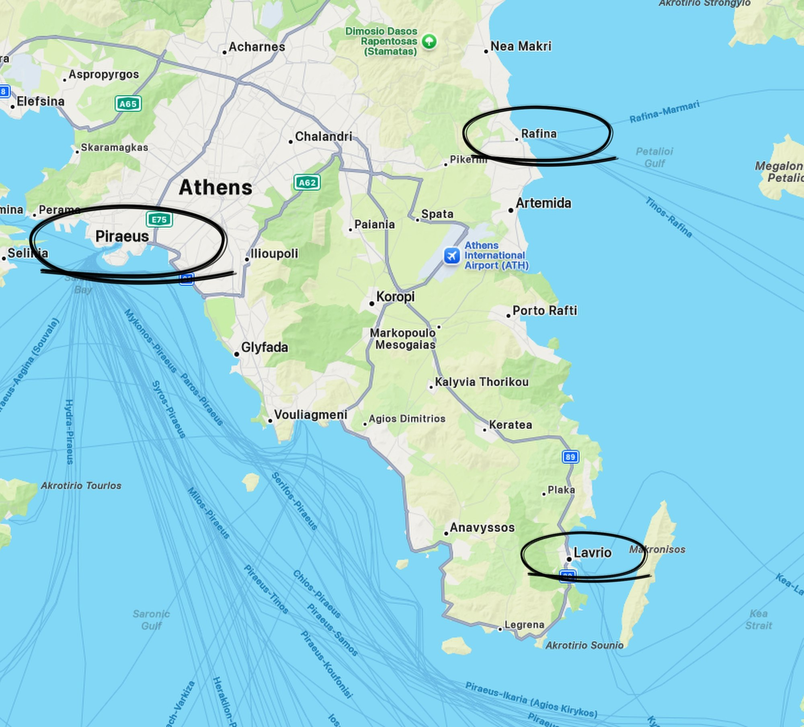

There are two ways to explore Greece. You can hire a car, drive around the mainland and discover beaches, mountain villages and tavernas that haven't changed much in a hundred years. Or you can take to the water and explore the hundreds of Greek islands scattered around the Aegean and Ionian seas.
Actually, there's no reason why you can't do both. And if you have enough time, that's exactly what we'd recommend.
But before you start imagining yourself leaping from one beautiful Greek island to another, cocktail in hand, there's something you need to understand.
Getting around the Greek islands isn't quite like jumping on a train in Europe. You can't simply turn up at a harbour, wave your arms about and expect a ferry to whisk you off to Santorini in twenty minutes.
Well, you could try, but you'll probably end up sitting on the harbour wall wondering where it all went wrong.
The secret to successful Greek island hopping is understanding the ferry network, knowing which ports to use and doing a little planning before you go.
And one place in particular makes all of this considerably easier.
Athens.
ATHENS – THE MAIN GATEWAY TO THE GREEK ISLANDS

Athens isn't just somewhere to visit for the Acropolis, ancient ruins and a rather expensive rooftop cocktail. It's also the main gateway to the Greek islands.
Its principal harbour is Piraeus, one of the busiest passenger ports in Europe and the starting point for an enormous number of ferry journeys.
From here, you can reach the Saronic Islands, the Cyclades, Crete, the Dodecanese and many other destinations across the Aegean.
And when I say busy, I mean busy.
Piraeus is an enormous working port, with ferries arriving and departing throughout the day. There are multiple departure gates, different ferry companies and ships that look big enough to transport a small country.
It's quite a spectacle, particularly when several ferries are loading passengers and vehicles at the same time.
But here's the important bit. Piraeus isn't the only port serving Athens.
There are actually three main ferry ports in the wider Athens area, and choosing the right one can make a considerable difference to your journey.
1. Piraeus – the big one
Piraeus is Athens' main port and the one you'll probably use most often.
It's approximately 10 kilometres from the centre of Athens and is relatively easy to reach using the metro.
You can catch Line 1 (the green line) or Line 3 (the blue line) to Piraeus, depending on where you're staying. There are also buses and taxis, although traffic in Athens can make journey times rather unpredictable.
From Piraeus, you can catch ferries to some of Greece's best-known islands. These include:
- Aegina – a popular island escape, close enough for a day trip.
- Poros – a pretty island with a lovely waterfront town.
- Hydra – famous for its beautiful harbour and lack of motor vehicles.
- Spetses – elegant, traditional and wonderfully atmospheric.
- Paros and Naxos – two excellent bases for exploring the Cyclades.
- Mykonos and Santorini – two of the best-known Greek islands.
- Crete – for those who fancy something considerably bigger.
- The Dodecanese islands – including Rhodes and Kos.
Piraeus is particularly useful if you're planning to visit several islands, as it offers a wide range of connections.
2. Rafina – the easier airport option
Rafina is on the eastern side of the Athens region and is considerably closer to Athens International Airport than Piraeus.
It's around 30 kilometres from central Athens and roughly 25 kilometres from the airport.
If you're flying into Athens and heading straight for the islands, Rafina can be a convenient alternative. It has ferry connections to islands including:
- Andros
- Tinos
- Mykonos
- Paros
- Naxos
- Ios
- Santorini (seasonal services)
Rafina is particularly useful for reaching the northern Cyclades.
It's a smaller and rather more manageable harbour than Piraeus, which can make the whole experience a little less overwhelming.
3. Lavrio – the lesser-known option
Lavrio is southeast of Athens and tends to be overlooked by visitors.
However, it's worth knowing about if you're planning to visit some of the western Cyclades.
Ferries operate to islands including Kea, Kythnos, Syros, Milos and other destinations, depending on the season and timetable.
It's further from central Athens than the other two ports, so you'll need to factor in the extra travelling time.
And that's not the sort of Greek island adventure anyone wants.
FERRYHOPPER – YOUR NEW BEST FRIEND

Now, if there's one website we'd recommend using when planning a Greek island-hopping holiday, it's Ferryhopper.
Think of it as a one-stop shop for Greek ferry travel.
Instead of searching through dozens of different ferry company websites, Ferryhopper allows you to compare routes, departure times, journey durations and ticket prices in one place.
You simply enter where you want to travel from, where you want to go and your dates. It will then show you the available ferry connections.
You can also use it to explore routes between islands, which is particularly useful when you're trying to work out whether your proposed itinerary is actually possible.
One of its most useful features is the ferry map. You can see which islands are connected and start building an itinerary around the available routes.
You can also book tickets online rather than queuing at a harbour ticket office in the Greek sunshine, which sounds considerably more romantic than it actually is.
And if you're travelling with a hire car, you can check which sailings accept vehicles and include the appropriate vehicle ticket when booking.
Just remember that not every ferry carries cars, and some smaller islands have limited vehicle services.
We'd recommend using Ferryhopper as your starting point, but always check the final sailing details, departure port and boarding instructions before travelling.
ISLAND HOPPING – HOW DOES IT ACTUALLY WORK?
This is where things get interesting.
One of the great advantages of Greece is that many islands are connected by regular ferry services. You don't necessarily need to return to Athens every time you want to visit somewhere new.
For example, you could start in Athens, take a ferry to Paros, move on to Naxos, then continue to another Cycladic island before eventually returning to the mainland.
Or you could explore the Saronic Islands, visiting Aegina, Poros, Hydra and Spetses.
The trick is to choose islands that are connected by suitable ferry routes.
Some islands have frequent services, particularly during the summer months. Others have fewer connections, and you may need to travel via a larger island or return to the mainland.
This is why planning your route before booking accommodation is so important.
Don't book five different hotels and then discover that the ferry connecting them only operates twice a week.
That would be a fairly expensive lesson in Greek geography.
OUR SUGGESTED ISLAND-HOPPING ROUTES
If you're flying into Athens and want to experience a few different islands without spending half your holiday on ferries, you could consider something like this:
the saronic islands
Athens – Aegina – Poros – Hydra – Spetses – Athens
This is a particularly attractive route through the Saronic Gulf.
Aegina is close to Athens and makes a good introduction to island life. Poros has a beautiful harbour and a relaxed atmosphere. Hydra is wonderfully distinctive, with its stone mansions, donkeys and car-free streets. Spetses provides a lovely final stop before returning to the mainland.
You could spend two or three nights on each island, depending on how much time you have.
Alternatively, if you're interested in the Cyclades, you could consider:
the cyclades
Athens – Paros – Naxos – Mykonos – Athens
This gives you a mixture of traditional Greek island scenery, beautiful beaches, charming villages and, if you fancy it, a little of the more glamorous side of Greece.
Naturally, these routes depend on the dates you travel and the ferry services operating at the time. Check the connections before committing to the itinerary.
FAST FERRIES OR SLOW FERRIES?
Not all Greek ferries are created equal. You'll generally come across two main types.
Conventional ferries
These are the larger ships, often with indoor and outdoor seating, cafés, restaurants and plenty of room to wander around.
They take longer, but they're usually more comfortable for longer journeys. They're also often the better option if you're travelling with a vehicle.
There's something rather enjoyable about sitting outside with a coffee, watching the islands drift past while someone else does the driving.
High-speed ferries
These are designed to get you to your destination considerably quicker. They're particularly useful if you're trying to fit several islands into a shorter holiday.
However, they can be more expensive, and the experience can be less relaxed. You're generally spending more time seated inside rather than wandering around the decks.
They can also be more affected by rough sea conditions.
And if you've ever experienced a high-speed ferry in a decent swell, you'll understand why some people prefer to keep their breakfast where it belongs.
WHAT ABOUT THE FERRIES IN WINTER?
This is something worth considering if you're travelling outside the main summer season.
Greece doesn't shut down completely when the tourists disappear, but ferry services do change.
Some routes operate throughout the year, while others become less frequent or disappear altogether until the following spring.
The popular islands generally retain regular connections, but smaller islands can have a more limited timetable.
During the summer, you may find several sailings a day on popular routes. In winter, you could find yourself with just one sailing or a service operating on selected days.
The weather can also play a part. Strong winds, particularly the summer Meltemi winds in the Aegean, can occasionally disrupt ferry services.
Always check your sailing before travelling, and avoid making tight connections between ferries, flights and accommodation.
It's much nicer to enjoy your last Greek evening with a glass of wine than spend it frantically refreshing a ferry timetable.
More on the seasons: When to go to Greece
SHOULD YOU TAKE YOUR HIRE CAR ON THE FERRY?
This depends on how you like to travel.
Taking a car can be useful if you're visiting larger islands such as Crete or exploring somewhere where public transport is limited.
However, it can also add considerably to the cost of your ferry tickets.
And there's another thing. You don't necessarily need a car on every island.
On Hydra, for example, there are no ordinary cars. On smaller islands, you might find that a scooter, local bus or simply a pair of walking shoes is all you need.
If you're hiring a car on the mainland, check with your rental company before taking it on a ferry. Some hire agreements prohibit transporting the vehicle between islands without written permission.
You may also need separate insurance arrangements.
Sometimes it's easier to return your hire car before taking the ferry and hire another vehicle when you arrive.
It might sound like more work, but it could save you money and avoid a rather awkward conversation with the hire company.
Hiring a car? Read our car hire tips and car hire insurance tips
A FEW TIPS BEFORE YOU SET SAIL
After travelling around Greece, we've picked up a few things that make ferry journeys considerably easier.
- Book ahead in summer. Popular routes can become busy, particularly during July and August.
- Check the departure port. Athens has three main ferry ports, and they aren't interchangeable.
- Arrive early. Piraeus is enormous. Give yourself time to find the correct departure gate.
- Keep your tickets handy. Have your booking confirmation and any required boarding documents accessible.
- Check vehicle requirements. If you're taking a car, make sure you've booked the correct vehicle category.
- Watch the weather. Strong winds can affect ferry services.
- Don't overcomplicate your itinerary. Two or three islands explored properly are often better than six visited in a frantic rush.
- Allow a buffer before flights. Don't rely on a ferry arriving just in time for your flight home.
And perhaps most importantly, remember that Greek island time operates on a slightly different setting to the rest of the world.
SO, IS ISLAND HOPPING WORTH IT?
Absolutely.
Greece has hundreds of islands, each with its own personality. Some are lively and sophisticated, others are wonderfully traditional, and some are little more than a harbour, a beach and a handful of tavernas.
That's rather the beauty of it.
You can spend a few days exploring ancient Athens, head down to Piraeus and find yourself on a beautiful Greek island before lunchtime. A few days later, you can be somewhere completely different, enjoying a beach that looks as though it belongs in the Caribbean.
Our advice is to use Athens as your starting point, get familiar with the ferry network and let Ferryhopper help you put the pieces together.
But don't try to visit every island.
Greece has been here for thousands of years. It's not going anywhere.
And if you try to see it all in one holiday, you'll spend more time dragging suitcases across ferry terminals than actually enjoying the place.
Take your time, pick a few islands, find a favourite taverna and enjoy the journey.
After all, the ferry isn't just a way of getting somewhere.
It's part of the holiday.